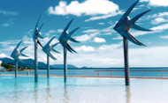
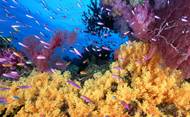
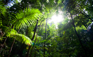

Cairns is a city of about 140,000 people located in tropical North Queensland, in the north-eastern corner of the Australian continent. It is a popular tourist hub because of its proximity to the Great Barrier Reef and the World Heritage rainforests.
Cairns has a tropical climate with daytime temperatures around 25°C (77°F) in July which is ideal for a range of activities including scuba diving, snorkeling, sailing, water rafting, canoeing, hot air ballooning and enjoying aboriginal culture and exotic Australian wildlife.

Cairns Lagoon

Great Barrier Reef

Rainforest
Cairns has a well developed tourist infrastructure with a multitude of hotels and guest houses to serve every budget. Most of the accommodation options, from 5 star hotels to backpacker’s lodges, are within a walking distance to the compact city core and the conference venue. Local attractions include botanical gardens, art galleries rich of aboriginal art, promenades, shopping centres, restaurants and markets.
The conference will be held in the Cairns Convention Centre, an award-winning facility in the waterfront area of central Cairns.
Please watch this promotion video with the panoramic view of Cairns, the Convention Centre and its facilities.
Plenary will be held in Hall A and the Poster Display and the Trade Exhibition will be located in Hall B, co-located with the morning/afternoon teas.